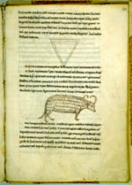

C. Julius Hyginus, Astronomica; voorafgegaan door: Julius Firmicus Maternus, Matheseos libri IV. Latijn. Handschrift op perkament, 111 ff., 235 x 160 mm. Frankrijk, vermoedelijk Noord-Frankrijk, twaalfde eeuw. -- (VLQ 92)
Hyginus, een tamelijk onbekende auteur, besteedde in zijn Astronomica uitvoerig aandacht aan de mythologische implicaties van de sterrenbeelden. Vermoedelijk is dat de reden dat hij in de middeleeuwen veel gelezen werd. Maar het grote aantal handschriften is mede reden dat de tekst slecht bestudeerd is en dat we nog steeds de teksttraditie niet goed kennen. Evenmin is de geschiedenis van de illustraties erg duidelijk. Vermoed wordt dat ze in de elfde eeuw aan andere handschriften werden ontleend.
Ook dit Leidse handschrift uit de twaalfde eeuw met tweeënveertig illustraties is nauwelijks onderzocht. Ze zijn verwant aan een serie die gevonden wordt in een naar Aratus (zie nummer 59) gemaakte catalogus van sterrenbeelden, waarvan het oudste handschrift, thans bewaard in de Biblioteca Nacional te Madrid als codex 3307, van Franse herkomst is.
Vergelijking van de hier getoonde pagina’s laat zien dat de Andromeda op folio 100r op een heel andere iconografische traditie terug moet gaan dan die van het voorafgaande nummer.
Literatuur
- A.W. Byvanck, De platen in de Aratea van Hugo de Groot. Amsterdam 1949 ( = Mededelingen der Koninklijke Nederlandse Akademie van Wetenschappen, afd. Letterkunde. N.R. 12, nr. 2), p. 63.
- K.A. de Meyïer, Codices Vossiani Latini. Leiden 1973-1984 ( = Bibliotheca Universitatis Leidensis. Codices manuscripti. XIII-XVI), t. 2, p. 211-213.
- Vergelijk: M.D. Reeves in: Texts and transmission. A survey of the Latin classics. Ed. by L.D. Reynolds. Oxford 1983, p. 186-189.
| vorige pagina | top pagina |